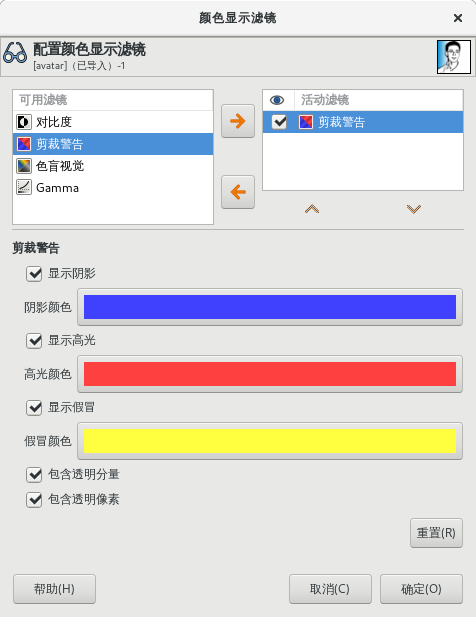
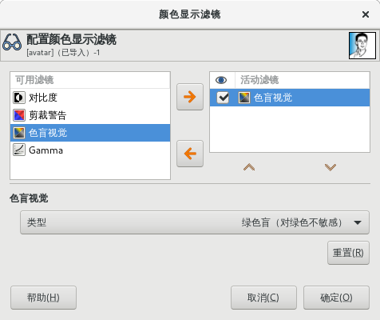
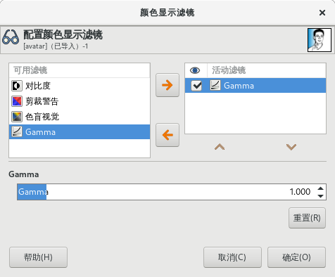

⇨显示滤镜
此命令执行后会显示一个对话框，可以管理显示滤镜。
显示滤镜与滤镜菜单中的滤镜不是一回事。显示滤镜只能用来改变图像的显示效果，无法改变图像数据。这个功能对于软打样、控制色彩管理以及模拟色弱等都很有用。
视图⇨显示滤镜
- 该对话框分左右两部分：
左边显示可用的显示滤镜。您可以选择一个滤镜，然后点击右箭头按钮，可以将其移动到右边。
右边显示您所选择的显示滤镜，如果右框中的条目被勾选，该显示滤镜就会被应用。您可以使用左箭头按钮将滤镜从右框移到左框。
在右框中点击一个显示滤镜的名称，它的选项会显示在下面的配置区域。
对比度
医学上，对比敏感度是指视觉系统分辨对比度轻微差异的能力。一些患有白内障(这意味着晶状体有些不够透明，会将光线散射到视网膜上)或视网膜疾病(比如，由于糖尿病破坏了杆状体和锥状体)的人对对比度的敏感度有缺陷：例如，他们会难以分辨衣服上的斑点。
显示滤镜➡对比度
- 对比度循环：
启用对比度显示滤镜，您看到的图像就类似患有白内障的感觉。您可能要增加图像的对比度，这样患有白内障的患者的眼睛才能够看清楚。
在大多数情况下，只有很低的对比度循环数值才有意义。
较高的值会产生副作用：如果对比度循环数值超过0.5，就会出现补色。
剪裁警告
 显示滤镜➡剪裁警告
显示阴影：标记曝光不足的像素(32位浮动模式下小于0)。
阴影颜色：用户指定用于填充曝光不足的像素的颜色。
显示高光：标记曝光过度的像素(32位浮动模式下超过1)。
高光颜色：用户指定用于填充曝光过度的像素的颜色。
显示假冒：标记非数字(NaN)像素，只有在出现零除法错误等情况下才会可见。
假冒颜色：用户指定用于填充NaN像素的颜色。
包含透明分量：启用后，在警告中包含alpha分量。
选择透明像素：启用后，在警告中包含完全透明像素。
色弱视觉
这里是指色弱。
 显示滤镜➡色弱
在您的屏幕上看起来非常完美的图像，对于有视力缺陷的人来说，或者在不同的屏幕上，看起来可能会有些不同。
红色弱(对红色不敏感)：红色弱是指红色视觉缺失，也就是大家熟知的先天性色弱(红绿色弱)。红绿色弱在人群中发生的频率相对比较高。
红色弱其实比较复杂，有这种情况的人既无法分辨红色，也无法分辨绿色，虽然他对黄色和蓝色仍然敏感。此外，对亮度的感知也会有些不足。
绿色弱(对绿色不敏感)：患了绿色弱，人的绿色视觉就会有缺陷。绿色弱其实就像红色弱一样，因为患者对红色和绿色的感知能力下降，但没有亮度下降或色相(hue)变化。
蓝色弱(对蓝色不敏感)：患有蓝色弱的人，虽然对红色和绿色仍然敏感，但对蓝色和黄色的感知能力不足。对亮度缺乏一定的感知，色相(hue)向长波长方向转变。
Gamma
对于图像输入输出设备，其电强度和色彩亮度之间的对应关系并不十分精确，它取决于设备(相机、扫描仪、显示器等)。
Gamma是用来修正这种对应关系的一个系数。
图像即使是在亮度过高或过低的显示器上显示，也必须能够看到最亮的区域和最暗的区域。
通过Gamma显示滤镜，您可以了解在这些条件下图像的显示效果。
 显示滤镜➡ Gamma
驿窗注：
这里只是讨论当前的显示Gamma，不是图像本身的Gamma。如果您想修改图像本身的Gamma，请参考菜单【颜色⇨色阶】。